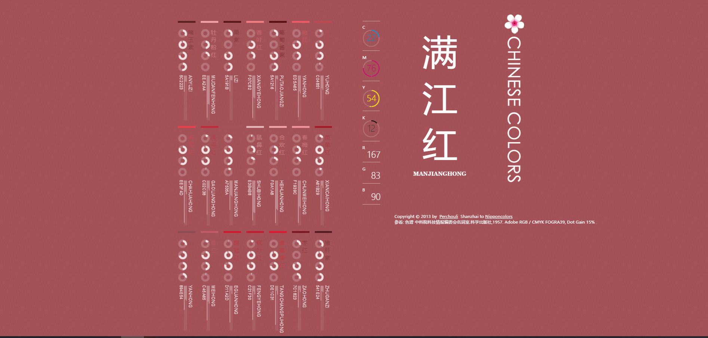

黑科技网站分享
分享一些个人觉得有意思的网站。
中国色
界面美观大气，颜色漂亮，名字中国风，在这里，总会找到一款心仪的中国色！

中国色从这里可以获得心仪颜色的RGB或16进制码(RGB旁边hover显示)哦，从此妈妈再也不用担心我的PPT和视频配色！
不存在系列
AI生成假纸片人老婆、假人、假猫、假房间等。大神们用GAN开发出了很多种玩法，这里只上两个生成假纸片人老婆的链接：


值得一提的是，在下方第二个链接中，提到了现在纸片人老婆不仅可以随机生成，还可以在一定程度上定制，专一党的福音！
想要了解更多不存在系列,参见【量子位】的这些waifu、猫、人都不存在！英伟达StyleGAN已催生一堆假片网站以及这些不存在的纸片人老婆，都是AI内斗出来的
cleanup
可以神奇地完美地P掉图片中你觉得不应该存在的事物，个人尝试过用它来去水印，非常amazing。
cleanup来自笔者刷过的一个b站视频用AI算法P掉毕导！结果非常的amazing啊！技术相关资料包括代码和论文
提出了一种新的方法，称为大掩模修复。LaMa基于
i）一种新的修复网络结构，该结构使用快速傅立叶卷积（FFC），具有图像宽的感受野；
ii）高感受野感知loss；
iii）大型训练面具，释放前两个组件的潜力
未完待续···
你有收藏的好玩的网站吗？不妨留在评论区向我分享一下哈哈
本博客所有文章除特别声明外，均采用 CC BY-NC-SA 4.0 许可协议。转载请注明来自 相子心のBlog！
评论